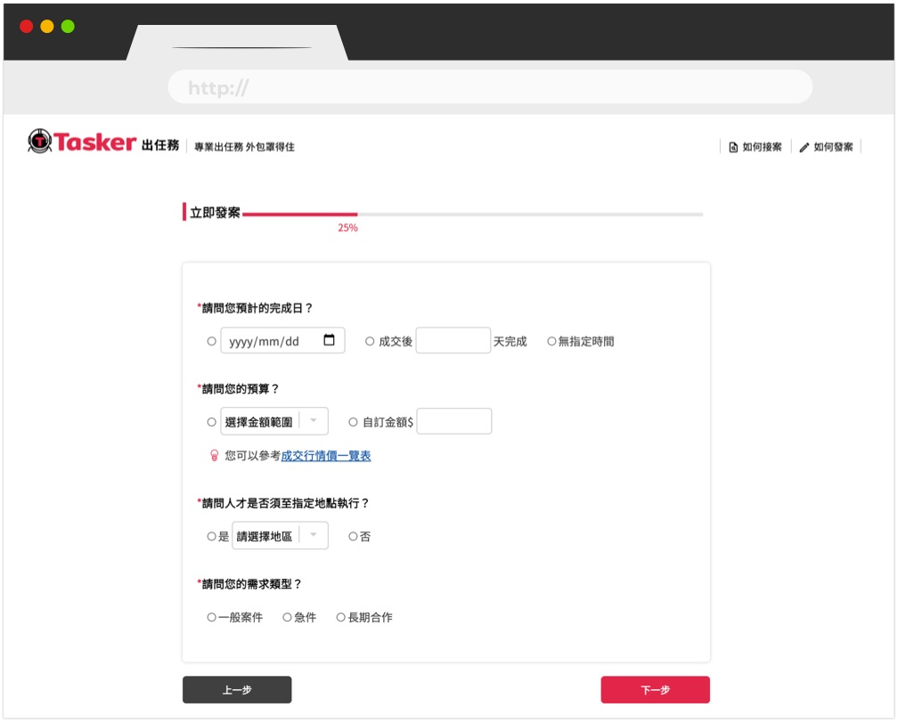

Before “Tasker”, the website was called “518外包網”, and it was designed for freelancers to find remote work. However, there were fewer and fewer jobs on the site. Thus, the Tasker team decided to redesign the website to attract more people to hire freelancers via Tasker.
First, I designed several questions for interviewing the users, who have searched for professional help on the website before, to find out the problems they encountered while using the website. After 60 phone interviews, which were carried out by the customer service team, I discovered the following issues:
- People did not know what kinds of professional help they could find on the website.
- While posting a job, most users did not know which category they should choose and what information they should include.

- Users, who required design services, needed an easier way to see freelancers’ artwork.
Solution
1. The homepage includes a noticeable search bar and a clear list that covers all the services provided by the freelancers.
2. The site automatically assigns the jobs posted by users to the right category according to the content. In addition, to prevent the users from having a difficult time elaborating on their needs, the site will ask them several questions and organize their requirements systematically.
3. Freelancers’ artwork is directly demonstrated on the services page. In other words, users no longer have to click a portfolio first in order to see all the artwork.
Then, I designed wireframes to discuss with stakeholders:
Mockup
The homepage puts emphasis on the various categories of freelancers on Tasker, and users can also search for freelancers by using the search bar.
While posting a job, Tasker will automatically match a few categories according to the content.

While searching for a designer, users can directly see all the freelancers’ artwork on the services page.